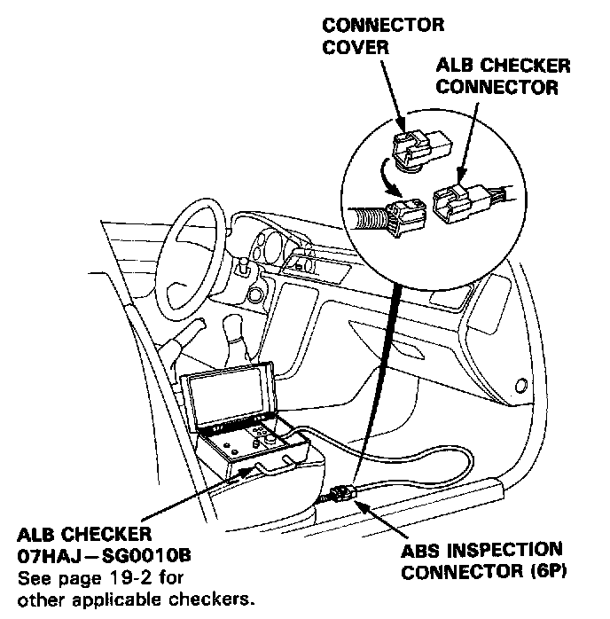
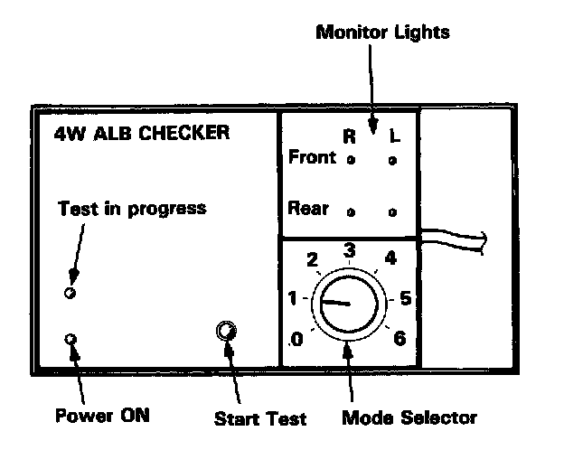
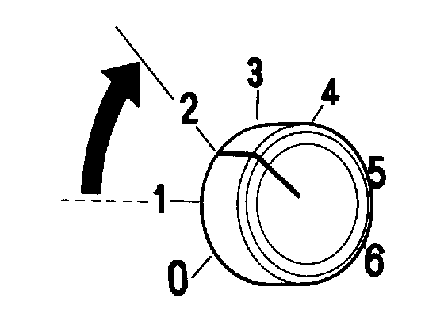
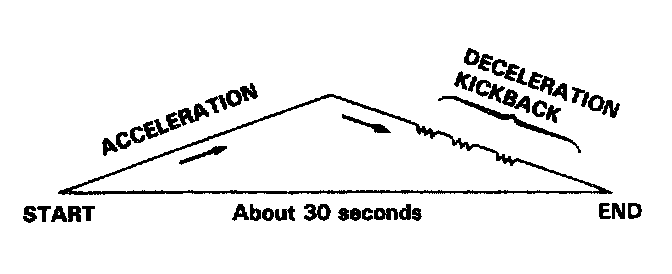

Function Checks

ALB Checker Function Test
NOTE:
- The ALB checker is designed to confirm proper operation of the anti-lock brake system (ABS) by simulating each system function and operating condition. Before using the checker, confirm that the anti-lock brake system (ABS) indicator light is not indicating some other problem with the system. The light should go on when the ignition is first turned on and then go off and stay off one second after the engine is started.
- The checker should be used through modes 1-5 to confirm proper operation of the system in any one of the following situations:
- After replacing any ABS component.
- After replacing or bleeding the system fluid (0 mode not necessary).
- After any body or suspension repair that may have affected the sensors or their wiring.
- The procedure for modes 1-5 see image and mode "0" (wheel sensor signal). Testing and Inspection
Warning: Disconnect the ALB checker before driving the car. A collision can result from a reduction. or complete loss, of braking ability causing severe personal injury or death.
1. With the ignition switch off, disconnect the ABS inspection connector (6P) from the connector cover located on the cross-member under the passenger's seat and connect the ABS inspection connector (6P) to the ALB checker.
NOTE: Place the vehicle on level ground with the wheels blocked, put the transmission in neutral for manual transmission models, and in [P] position for automatic transmission models.
2. Start the engine and release the parking brake.

3. Operate the ALB checker as follows:
(1) Turn the Mode Selector switch to "1".
(2) Push the Start Test switch:
- The test in progress light should come ON.
- In one or two more seconds, all four monitor lights should come on (If not the checker is faulty).
- The ABS indicator light should not come ON.
NOTE: When the test in progress indicator light is ON. Don't turn the Mode Selector switch.

4. Turn the Mode Selector Switch to "2".

5. Depress the brake pedal firmly and push the Start Test switch. The ABS indicator light should not go on while the Test in Progress light is ON. There should be kickback on the brake pedal.
NOTE: The operation sequence simulated by Modes 2, 3, 4 and 5:
6. Turn the Mode Selector switch to "3", "4", and "5". Perform step 5 for each of the test mode positions.
Mode 1:
Sends the simulated driving signal 0 mph (0 km/h) to 113mph (180km/h) to 0 mph (0 km/h) of each wheel to the ABS control unit. There should be NO kickback.
Mode 2:
Sends the driving signal of each wheel, then sends the lock signal of the left rear wheel to the ABS control unit. There should be kickback.
Mode 3:
Sends the driving signal of each wheel, then sends the lock signal of the right rear wheel to the ABS control unit. There should be kickback.
Mode 4:
Sends the driving signal of each wheel, then sends the lock signal of the left front wheel to the ABS control unit. There should be kickback.
Mode 5:
Sends the driving signal of each wheel, then sends the lock signal of the right front wheel to the ABS control unit. There should be kickback.
Mode 6:
Not used on this model.
Inspection points:
1. The ABS indicator light comes ON.
- Check the Diagnostic Trouble Code (DTC) and go to the troubleshooting. Initial Inspection and Diagnostic Overview
2. There is little or no kickback in modes 2 through 5 and the ABS indicator light does not come ON.
- Air in the high pressure line.
- Restricted high pressure line.
- Faulty modulator unit.